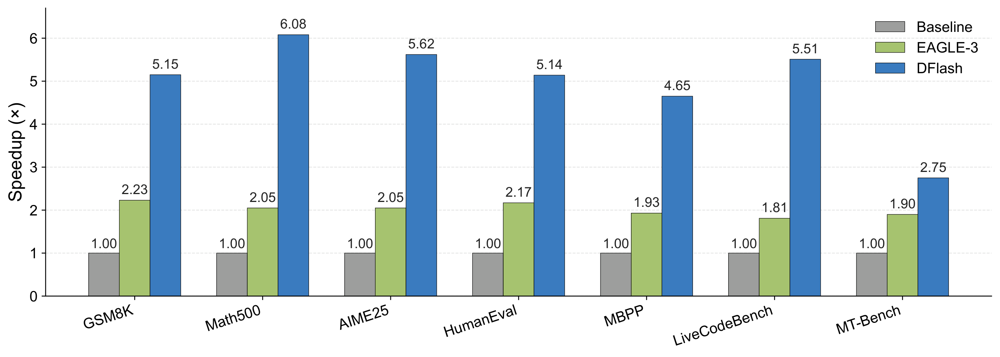
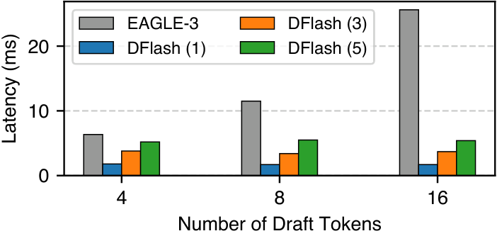
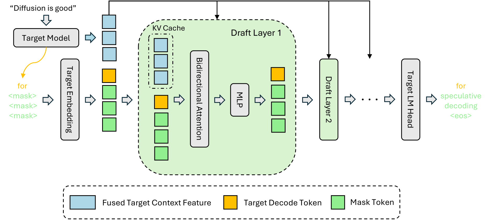
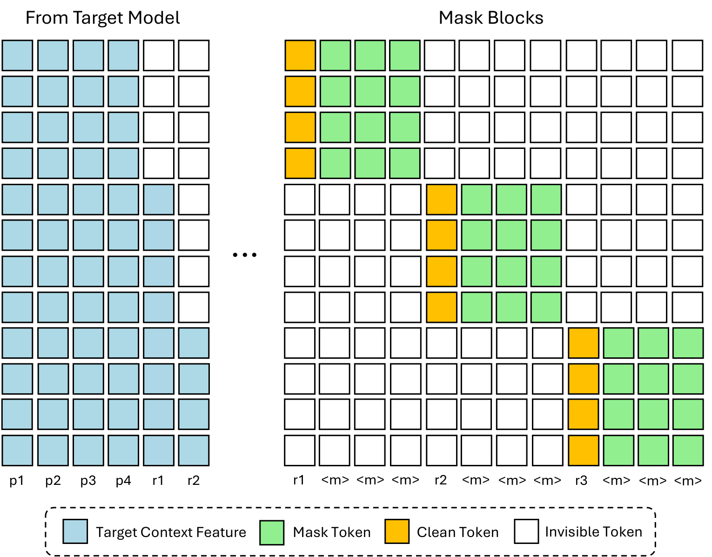
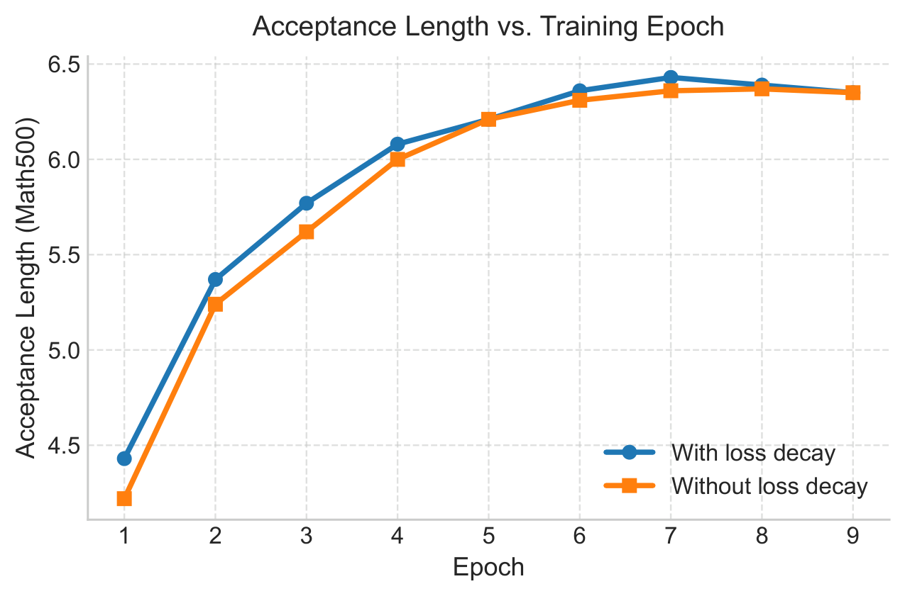

PAPER READINGS / ICML 2026 / ARXIV V2 / READ 2026-10-27
DFlash：让目标模型提供上下文，让扩散模型并行起草
一句话：DFlash 用目标模型的多层隐藏状态持续指导一个小型 block diffusion drafter，一次前向生成整个草稿块，再由原自回归模型验证，以减少每个正确输出 token 分摊的时间。
Paper Metadata
DFlash: Block Diffusion for Flash Speculative Decoding。Jian Chen、Yesheng Liang、Zhijian Liu；University of California, San Diego。ICML 2026。arXiv 2602.06036，v1 为 2026-02-05，本次精读指定 v2，2026-05-28，13 页。PDF、arXiv HTML 和作者 TeX 源码交叉核对。[1]
Paper PDF · arXiv · Official code · Model collection。未确认独立 DOI、额外 supplementary 或作者 slides；附录在这份 PDF 中。Reading / Last Updated：2026-10-27。
保留全部 5 张原始 Figure、13 张完整 Table、4 个编号公式、Appendix A.3 的全部未编号公式。正文遵循 Abstract → §1–§6 → Acknowledgements / Impact → A.1–A.5；扩展研究和个人判断放在原文分析之后。Paper Fact 指原文，External Source 指链接的一手资料，Interpretation / Agent-created Visualization 指本文重构。原图来自作者 TeX 的独立 PDF，以 3× 无裁切渲染；表格保留原 HTML 的行列、合并表头、强调和 MathML。原论文采用 CC BY 4.0，原资产署名归作者。[1]
Abstract / TL;DR：并行草稿必须同时便宜而且容易被接受
一段话。 自回归目标模型每次只推进一个 token；传统 speculative decoding 虽能并行验证，但草稿本身仍逐步产生。DFlash 把草稿改成一次前向的 masked-block 预测，并把目标模型浅到深的多层隐藏状态投影为上下文，在每一个草稿层注入 K/V。这样小模型不用独立重建全部语义，仍能以较低草稿延迟取得较长正确前缀。Qwen3-8B、Transformers、非 thinking、temperature 0 的七任务平均为 4.86×，Math500 峰值 6.08×；B200 / SGLang 的收益也跨并发验证。这里的数字都有具体模型、后端和任务条件。[1]
五个关键点：
- 角色分工改变。 diffusion 只负责建议，目标自回归模型仍决定最终输出；一轮 denoising 的质量不足可由验证纠正。
- 核心不只有并行。 target feature 每层作为 K/V 被直接读取，比只在输入融合更有效；Table 9 分别隔离条件注入与并行起草。
- 接受的是连续前缀。 第一个拒绝点之后，即使后面的 token 碰巧正确，也不能直接保留。
- 优化目标是时间 / 有效推进。 更深模型或更大块提高 τ，也增加起草和验证成本；Table 6 的 8 层并不最快。
- 系统条件决定落地。 target / draft 两套 cache、hidden extraction、调度重叠、batch、上下文长度均影响最终收益；projection 的 42 MB 不是草稿系统的全部开销。
摘要 Claim 的尺度。 “over 6×” 是特定任务达到的峰值，不能当作每个部署的平均数；“up to 2.5× higher speedup than EAGLE-3” 必须说明 baseline 配置。下文会逐项复算，不直接照抄宣传性句子。
1. Introduction：把 diffusion 的质量短板留给验证器处理
1.1 为什么传统 speculative decoding 仍有串行瓶颈？
普通 decode 重复读模型权重、读取历史 KV，再输出一个 token。小 batch 时这些操作往往难以把 GPU 计算单元用满。speculative decoding 先让小模型猜若干 token，再让目标模型同时计算这些位置的条件分布；如果连续猜对，就把一次大模型前向摊到多个输出上。[1][3]
但若小模型也自回归地生成 γ 个 token，就有 γ 次依赖链：后一轮输入必须等待前一轮结果。做更深的小模型可提高质量，却会在每个串行步骤重复付费；做更宽的树会提高候选覆盖，也增加验证量。DFlash 的机会在于把“按 token 重复做”改成“对一个块做一次”。
1.2 为什么小 diffusion 模型需要 target feature？
独立小 diffusion drafter 要从 token 上下文重新理解语义、代码和推理状态；它并行猜出未来并不意味着猜得对。目标模型已经完成昂贵的上下文计算，隐藏状态还含有未完全被当前 logits 使用的未来预测信息。DFlash 把这些表示复用给草稿模型。[1][7]
Interpretation。 这是一种强耦合的 adapter：target 负责历史理解，draft 负责把隐藏信息展开成多个未来 token。训练必须对齐特定 target 的表示与输出，因此它不像独立小模型那样容易随意替换 target。


Original vector PDF · Click to zoom · Source: Chen, Liang, Liu / CC BY 4.0 [1]
Figure 1 — 这张图解决什么问题？ 直观看到 Qwen3-8B 上的实际 decode 加速。如何阅读？ 横轴七任务；纵轴相对普通 AR decode 的 speedup；灰色 1× 是基线，EAGLE-3 与 DFlash 是另外两组。每根柱顶的数字为可核验的原始值；图中 EAGLE-3 对应 Table 1 的 tree 60、temperature 0。
Components / Data Flow。 这是结果图，没有模型数据流箭头。每组三根柱必须在相同任务内比较，不能把 Math500 的 6.08 与 chat 的 1.90 混成一个提升比。
Key Observation / Why It Matters。 DFlash 从 MT-Bench 的 2.75× 到 Math500 的 6.08×；不同文本可预测性影响接受前缀，任务差异很明显。Interpretation。 数学、代码的长而规律输出给并行草稿更大收益空间，聊天结果提醒我们报告任务分布。
Caption 审计。 原 caption 写“overall more than 2.5×”。按七任务 speedup 的平均，DFlash 4.86 / EAGLE-3(60) 2.02 = 2.406×；逐任务比值也并非都超过 2.5。图保留原 caption，解读以柱值和 Table 1 为准。相对 EAGLE-3(16) 的平均比值则为 2.761×，这是另一套 baseline。[1]
1.3 引言里的“上限”是背景判断，不能当定理
原文将 EAGLE-3 概括为约 2–3×，将大型 diffusion drafter 描述为约 3–4×。这些话适合说明当前作者实验中的成本矛盾，却不能代表所有已发表结果：EAGLE-3 官方论文摘要报告最高 6.5×；PARD 报告最高 3.67×；SpecDiff-2 在它自己的条件下报告平均最高 5.5×。[4][6][9] 不同硬件、任务、baseline 和解码设置不能据此直接排名。DFlash 的贡献需要 Table 1、5、9 等受控比较来支撑。
2. Related Work：先把三条技术路线分开
2.1 Speculative decoding：验证协议与草稿架构
Leviathan 等建立精确 speculative sampling：提议分布 q，目标分布 p，接受概率 min(1,p/q)，拒绝后从修正分布采样。它解释了为何草稿不需要达到目标模型的独立生成质量。[3] Medusa 用多个预测头形成树，EAGLE 系列把目标特征用于草稿；EAGLE-3 放弃直接预测固定未来 feature 的约束，使用多层特征与 training-time test。[4]
DFlash 沿用“提议 → 验证”的接口，改变的是提议端的结构、条件输入和训练。lossless 是验证协议的属性，并行扩散本身不提供这个保证。
2.2 Diffusion LLM：块内并行，块间推进
masked diffusion 模型可同时预测多个空位，但独立生成经常需要多轮去噪才能提高质量。block diffusion 把序列按块推进，块内双向，已完成的历史块可缓存；避免整段一次生成时固定长度和 cache 支持的困难。[5]
DFlash 用的是这种并行 masked-block 预测思想，推理时只做 一次 draft forward。它不是先迭代多轮 diffusion 得到完整高质量文本，再交给 target；也不把目标模型改造成 diffusion LLM。
2.3 Diffusion-based speculation：容量、延迟与对齐
PARD 用小型并行 drafter；“Your LLM Knows the Future” 利用 AR 表示中的未来信息；DiffuSpec 用推理时 search / alignment，SpecDiff-2 强化训练推理对齐。[6–9] TiDAR 则把 diffusion 和 AR 目标联合进一个模型，原文指出它的最终生成质量还不属于这里的严格无损设定。[1]
为什么这些工作需要放在前面？ 并行预测、hidden-feature 条件和 target verification 均有前例。DFlash 的新意是把它们组合为小模型可用的设计：持续 KV 条件、一次块预测、anchor 匹配训练和 prefix 加权。后文 Table 9 比“首次将 diffusion 用于草稿”这种过度概括更能解释贡献。
3. Preliminaries：用有效推进量给时间成本定价
3.1 原公式 (1)：平均每 token 延迟
LaTeX source
L=\frac{T_{\mathrm{draft}}+T_{\mathrm{verify}}}{\tau}T_draft、T_verify 是一轮起草与验证的时间；τ 是每轮有效推进量的期望，包含一个 target bonus token；L 的单位可为 ms/token。输入输出都是时间标量，不存在隐藏 tensor shape。普通 AR target 的 per-token 延迟记作 L_target，加速 η=L_target/L。
γ 在本节是 proposal token 数，τ∈[1,γ+1]。在方法节使用 block size B 时，块内有一个已知 anchor 和 B−1 个 masks，所以 γ=B−1，τ≤B。不要把 B=16 理解为 16 个 masks 外加一个 anchor。
Toy Example / Interpretation。 假设 target 每 token 10 ms，一轮 draft 2 ms、verify 12 ms，τ=7，则 L=2 ms/token，加速 5×。若更大块把 τ 提至 8，却让 draft+verify 增至 20 ms，加速只有 4×。这些是解释模型的假设值，不是论文测量。
工程含义。 分子是实际关键路径时间。feature extraction、cache 更新和同步应按计时边界归入；若 serving 能做调度重叠，则不能机械地把所有独立 op 时间相加。公式主要刻画 steady-state decode，没有单独覆盖 TTFT、排队与请求尾部截断。
3.2 原公式 (2)、(3)：串行 pass 和单次并行 pass
LaTeX source
T_{\mathrm{draft}}=\gamma\cdot t_{\mathrm{step}}t_step 是单次 AR drafter forward 延迟，γ 次串行依赖让时间近似线性增长。这里是链式草稿的简化分析；树扩展的 top-k、共享计算和调度使实际耗时还取决于实现。
LaTeX source
T_{\mathrm{draft}}=t_{\mathrm{parallel}}t_parallel 是整个块的单次 forward。“单次”不等于“零成本”或“不随块长变化”。 QK/PV、FFN、LM head 的运算量仍增加；短块区间可因更好的 GPU 利用率让延迟增长较缓。大 batch、长上下文或更大块时，compute 和 KV IO 会限制这个优势。


Original vector PDF · Click to zoom · Source: Chen, Liang, Liu / CC BY 4.0 [1]
Figure 3 — 目的与读法。 横轴草稿 token budget 为 4 / 8 / 16，纵轴草稿延迟 ms；比较 1 层 EAGLE-3 与 1 / 3 / 5 层 DFlash。按同一 budget 看层数成本，再在同一方法内横向看 budget。
Components / Key Observation。 这是 latency 柱图；EAGLE-3 随串行 budget 的增加耗时明显增长，DFlash 的并行块更平缓。作者特别指出 5 层 DFlash、16-token 设置比 1 层 EAGLE-3、8-token 设置起草更快。Why It Matters。 它给“可以花更深网络提高接受率”提供系统成本证据。
Interpretation / Caveat。 原图没有逐柱数字标签和误差条，本文不从像素编造精确耗时。图证明测量条件下的趋势，不证明任意设备、batch 或 block size 都恒定延迟；它也只测起草，不能替代完整 decode benchmark。
3.3 首个错误为什么决定 τ？
讲解推导。 令 a_k=P(第 k 个草稿被接受 | 前 k−1 个已接受)，则：
LaTeX source
\mathbb{E}[\tau]=1+\sum_{k=1}^{\gamma}\prod_{j=1}^{k}a_j条件接受概率的乘积是前缀存活概率；无需假设 token 独立。若 γ=4，所有条件 a_k=0.8，E[τ]=1+0.8+0.64+0.512+0.4096=3.3616。提高第一个位置的正确性会影响每个后续乘积，因此比只提高最后一位更有价值。这是 §4 的 loss decay 直觉。
AGENT-CREATED INTERACTIVE · MECHANISM, NOT BENCHMARK
第一处拒绝，为什么使后面的“正确”也失效？
玩具块有一个已知 anchor 和四个 proposals，B=5。改变首个错误位置，逐步观察起草、target 验证、提交与 bonus。后面的相等不能绕过中间错误。
- 1 · Context
- 2 · Parallel draft
- 3 · Target verify
- 4 · Commit prefix
4. Method：把 target 理解变成每层都能读的上下文
4.1 Inference：完整数据流与 Tensor Shape


Original vector PDF · Click to zoom · Source: Chen, Liang, Liu / CC BY 4.0 [1]
Figure 2 — 这张图解决什么问题？ 解释一轮 draft 怎样接收目标表示并同时填 masks。如何阅读？ 从上方 target model / fused context feature 到每层 KV；再从已知 token “for”和 masks 的 embedding 沿 draft layers 向下，经 target LM head 输出未来块。
Components / Data Flow。 Target 先对 prompt prefill，产生首 token 和多层 hidden states。多层状态 concat → 共享 projection / RMSNorm → 草稿每层 K/V。Anchor 与 masks 使用 target embedding，块内双向 attention 和 MLP 更新，最后借用 target LM head。图中 “speculative decoding <eos>” 是一轮预测示例，不意味着后面一定全部被接受。
Key Observation / Why It Matters。 蓝色 target context 直接进入每一层 K/V；它不会跟着草稿 token 一起过该层的 Query 和 FFN。持续可访问的上下文缓解仅输入一次后逐层稀释的问题，接受长度可随着草稿层数增长。
Interpretation。 草稿是提问端，target feature 是记忆端。每层使用自己的 K/V 投影重新读同一份融合特征，所以“所有层共享 target feature”不等于“所有层共享相同 K/V”。
采用 batch b、已验证上下文长度 S、block size B、隐藏宽 D、target feature 数 F=5、draft layers L_d、Q heads H_q、KV heads G、head dim d_h。以下表是讲解重构，不是原论文 Table：
| Tensor | Shape | 操作与角色 |
|---|---|---|
| 每个选中 target layer 的 hidden | [b,S,D] | 从已验证位置取得 |
| concat target hidden | [b,S,FD] | 本文采用最后维 concat |
| W_c | [D,FD] | 映射到 draft width，行向量实现为 XW_cᵀ |
| H_t | [b,S,D] | RMSNorm 后上下文，各层复用 |
| H_d | [b,B,D] | anchor + B−1 masks 的 draft 状态 |
| Q_i | [b,H_q,B,d_h] | 只由 draft block 产生 |
| context K_i / V_i | [b,G,S,d_h] | 从 H_t 投影，进入 draft cache |
| block K_i / V_i | [b,G,B,d_h] | 从 H_d 投影；草稿阶段为临时条目 |
| attention scores | [b,H_q,B,S+B] | GQA 逻辑广播；融合 kernel 可不物化 |
| masked-position logits | [b,B−1,Vocab] | target LM head，对每个空位并行预测 |
论文实验 F 固定 5，Coder 的 draft depth 为 8，其他主模型多为 5；“抽 5 层”和“draft 有 5 层”是不同设置。官方实现 hidden_states[layer_id+1] 的偏移需注意，HF tuple 往往含 embedding 输出。[2]

4.2 一轮推理：bonus token 是下一轮干净 anchor
- Target prefill prompt，生成首 token，并抽取 prompt hidden features；target KV 已有 prompt。
- 构造
[anchor, mask, …, mask]。用新确认的 target hidden 补充 draft context KV，一次双向 block forward 产生 B−1 个 proposal。 - Target 以 因果 attention 对
[anchor, proposals]做一个并行验证 pass；每个位置的 logits 判断下一个位置。 - 接受最长连续匹配前缀，保留 target 的 correction / bonus token。有效推进是接受 proposal 数 +1。
- Target cache 裁至有效边界；只留下验证通过位置的 target hidden。Draft 的临时双向块 KV 丢弃，下一轮用正确 target hidden 重新生成其历史 KV。
为何不能把整个双向草稿块写入历史？ 前面位置的 draft K/V 可能读取了后面尚未通过的 proposal / masks；即使其中 token 被接受，其草稿表示也不等于用已验证 target hidden 条件化的历史条目。官方 past_key_values_draft.crop(start) 先清掉本轮临时块，后续用 target hidden 重建上下文。[2]
# 讲解伪代码：单请求，proposal 为确定性 argmax
anchor, hidden = target.prefill(prompt)
while not finished:
draft_kv.append(project_new_verified_hidden(hidden))
proposal = draft.parallel([anchor] + [MASK] * (B - 1))
draft_kv.discard_temporary_bidirectional_block()
logits, verified_hidden = target.causal_verify([anchor] + proposal)
posterior = sample_target(logits, temperature)
a = longest_matching_prefix(proposal, posterior[:-1])
emit(proposal[:a])
anchor = posterior[a] # 拒绝点 correction 或全接受后的 bonus
target_kv.crop_to_verified_boundary()
hidden = verified_hidden[:a + 1] # 原 anchor 与通过的位置
这里以语义操作表达边界；实际代码 start 指向现有 anchor 的位置，crop 长度和 output buffer 更新需按索引核对。不能把伪代码的 emit 当作作者函数逐行拷贝。
4.3 Lossless：从官方 verifier 解释保证，而不是只写一句“无损”
v2 时期官方代码快照 94e4abc… 中，sample(draft_logits) 没传 temperature，所以草稿取 argmax；target sample(output.logits, temperature) 在 T>0 时做 multinomial。二者相等的布尔序列用 cumprod 求连续前缀，首个拒绝点用该 target sample 修正。[2]
为什么这仍能保留目标分布？ 将确定性 proposal 看作 delta 分布 q：在提议 token 上 q=1。Leviathan 的接受概率是 p(proposal)。直接从 p 抽一个 token 并判断是否等于 proposal，恰好以 p(proposal) 接受；不相等时，抽样结果等价于从 p 排除该 token 后归一化的修正分布采样。后续被接受位置的 target 条件前缀也都已经相同。[3]
这不代表可以把任意随机 proposal 换进来仍用相等判断；一般 q 需要正确 p/q 接受和残差分布。当前说明限于核对到的实现。分布一致不等于相同随机种子输出逐字一致：并行抽样消费 RNG 的顺序可以不同；greedy 也应关注不同 kernel / batch 的数值误差。
4.4 Training：一次抽很多 anchors，却不能看到未来 target features


Original vector PDF · Click to zoom · Source: Chen, Liang, Liu / CC BY 4.0 [1]
Figure 4 — 目的。 让训练批量并行处理多个推理形态的块，并阻止信息泄漏。如何阅读？ 先看顶部蓝色 clean target context，再看黄色 anchors、绿色 masks，最后逐行检查可见与白色不可见区域。
Components / Data Flow。 完整 clean prompt+response 先经冻结 target 因果 forward 获得隐藏状态。训练随机选 r₁、r₂、r₃ 等 response anchors，各构成一个 [r, m, m, m] 块；块内双向可见，不同 masked blocks 互不可见。Anchor r₁ 的块只能看 prompt features，r₂ 的块可看 prompt+r₁ features；不能读 anchor 自身或 anchor 之后的 clean target features。Anchor 本身由黄色 token embedding 提供。
Key Observation。 即使一次算完所有 clean hidden，attention mask 仍把每块可读的 target feature 限制在推理时已经存在的位置。Why It Matters。 否则 model 可以通过真实未来的 hidden 作弊，训练 loss 很低但推理接受率崩溃。Interpretation。 训练打包是“多个互相隔离的局部未来预测”，不是一段长 response 的任意双向填空。
Flex Attention 实现这种 sparse mask。固定每序列抽样块数，让草稿预测端的规模有界，但 target 处理 S tokens、上下文 K/V 投影与读取仍随 S 增长；所以“长上下文训练成本固定”只能指部分 draft-block 工作，而非整条链路。
4.5 原公式 (4)：给早期位置更大 loss 权重
LaTeX source
w_k=\exp\left(-\frac{k-1}{\gamma}\right)k 为块内预测位置的相对顺序，w_k 无单位；γ 在这里控制指数衰减，不是 §3 的草稿 token 数。γ 越大衰减越慢，γ 越小越偏重靠前预测。本文将该超参数称为 γ_loss 以避免混淆，原公式仍保留 γ。
讲解 objective。 对每个 sampled block j 的 masked positions，用冻结 target 生成的 response token y 做加权 CE：
LaTeX source
\mathcal{L}=-\sum_j\sum_{k=1}^{B-1}w_k\log[\mathrm{softmax}(z_{jk})]_{y_{jk}}z_jk 是 [Vocab] logits；训练张量概念上为 [batch, sampled_blocks, B−1, Vocab]。这里只表达加权求和，具体 reduction / normalization 依实现；不能据此声称论文使用未说明的归一化项。以下例子把第一个预测位置编号为 k=1：B=16、γ_loss=7 时，第一位权重 1，末位 k=15 约 0.1353。原文没有展开 anchor 与训练 loss 索引的对应代码，复现时仍需核对。这个相对衰减与前缀存活的非对称重要性相吻合，但 w_k 不是由真实 a_k 精确推出来的最优解。
共享 target embedding / LM head 并冻结这些权重；训练草稿 Transformer 与上下文 projection 等草稿适配组件。共享降低新增可训练参数；输出头仍要为 B−1 个位置计算 logits，不能因为共享就忽略它的计算成本。
5. Experiments：先固定测量条件，再比较加速
5.0 Setup / Experiment Audit
| 维度 | 作者提供的设置 | 解读与缺口 |
|---|---|---|
| 主 target | Qwen3-4B / 8B、Coder-30B-A3B、LLaMA-3.1-8B Instruct | 附录增加 Qwen3.5 / GPT-OSS |
| 训练数据 | 约 800K，Nemotron Post-Training V2 + CodeAlpaca | response 由各 target 重生成；不是原回答直接训练 |
| 层数 / block | 5 draft layers，Coder 8；B=16，LLaMA B=10；5 target layers | 100K 消融与 full-data 结果不能混用 |
| 训练优化 | 6 epochs，AdamW，LR 6e−4，clip 1，cosine，warmup 0.04 | 3072 tokens，Coder 4096；每序列 512 anchors |
| 默认硬件 | H200，除另有说明 | serving 使用单 B200，后端须单列 |
| 指标 | τ、相对 AR speedup、serving tok/s | τ 含 bonus；tok/s 是总吞吐 |
| 主表限制 | Table 1 max 2048 generated tokens；T=0 / 1 | thinking 关闭；其它表不能自动继承所有参数 |
| 精度 / batch | 附录内存例子 BF16；主实验未统一逐表完整披露 | 不把内存例子推成全部 benchmark 精度；需复现配置 |
| 统计 | 表格没有误差条、重复次数或置信区间 | 0.02× 等小差异不判断显著性 |
| 训练量 | 样本数、epochs、截断长度 | 未给全部实际训练 tokens、GPU-hours、能耗 |
Baseline fairness。 Qwen 使用 AngelSlim EAGLE-3 checkpoint，tree 16 对齐 DFlash block 16 候选预算，tree 60 是 EAGLE 的较大验证预算；均设 draft steps 7、top-k 10。候选数量相近不代表参数、训练数据、kernel 和总算力相同。LLaMA 的 Table 5 特别对齐训练数据，是更强的公平性证据。[1]
为何没有其它 diffusion baselines？ 作者说缺乏开源实现；这是原文对当时实验选择的解释，不是截至 2026-10-27 所有方法仍未开源的事实。论文未做完整跨方案同硬件重训，因此“领先所有 diffusion drafter”的强结论超出主实验。
5.1 Instruct Models — Table 1：强提升，但对比对象要写对
| Model | Method | Math | Code | Chat | |||||||||||||
| GSM8K | MATH-500 | AIME25 | HumanEval | MBPP | LCB | MT-Bench | Avg. | ||||||||||
| Temperature = 0 | Speedup | Speedup | Speedup | Speedup | Speedup | Speedup | Speedup | Speedup | |||||||||
| Q3-4B | EAGLE-3 (16) | 1.99 | 3.30 | 1.83 | 3.08 | 1.79 | 3.05 | 1.84 | 3.05 | 1.78 | 2.95 | 1.73 | 2.91 | 1.74 | 3.02 | 1.81 | 3.05 |
| EAGLE-3 (60) | 2.27 | 3.77 | 2.10 | 3.52 | 2.13 | 3.51 | 2.12 | 3.47 | 2.02 | 3.38 | 1.90 | 3.22 | 2.04 | 3.49 | 2.08 | 3.48 | |
| DFlash (16) | 5.15 | 6.53 | 6.09 | 7.84 | 5.68 | 7.27 | 5.21 | 6.64 | 4.78 | 6.09 | 5.41 | 7.09 | 2.85 | 4.35 | 4.91 | 6.54 | |
| Q3-8B | EAGLE-3 (16) | 1.94 | 3.23 | 1.81 | 3.02 | 1.79 | 3.00 | 1.89 | 3.17 | 1.69 | 2.82 | 1.57 | 2.65 | 1.63 | 2.83 | 1.76 | 2.96 |
| EAGLE-3 (60) | 2.23 | 3.71 | 2.05 | 3.49 | 2.05 | 3.44 | 2.17 | 3.65 | 1.93 | 3.25 | 1.81 | 3.03 | 1.90 | 3.26 | 2.02 | 3.40 | |
| DFlash (16) | 5.15 | 6.54 | 6.08 | 7.87 | 5.62 | 7.08 | 5.14 | 6.50 | 4.65 | 5.95 | 5.51 | 7.27 | 2.75 | 4.24 | 4.86 | 6.49 | |
| Temperature = 1 | Speedup | Speedup | Speedup | Speedup | Speedup | Speedup | Speedup | Speedup | |||||||||
| Q3-4B | EAGLE-3 (16) | 1.89 | 3.22 | 1.75 | 2.99 | 1.64 | 2.79 | 1.74 | 3.01 | 1.69 | 2.89 | 1.63 | 2.77 | 1.70 | 2.95 | 1.72 | 2.95 |
| EAGLE-3 (60) | 2.12 | 3.68 | 1.97 | 3.44 | 1.83 | 3.20 | 1.94 | 3.39 | 1.92 | 3.33 | 1.82 | 3.14 | 1.91 | 3.36 | 1.93 | 3.36 | |
| DFlash (16) | 4.71 | 6.00 | 5.09 | 6.67 | 3.73 | 4.92 | 4.74 | 6.04 | 4.42 | 5.66 | 4.90 | 6.50 | 2.67 | 4.07 | 4.24 | 5.69 | |
| Q3-8B | EAGLE-3 (16) | 1.87 | 3.12 | 1.73 | 2.91 | 1.63 | 2.74 | 1.75 | 3.05 | 1.64 | 2.74 | 1.56 | 2.57 | 1.58 | 2.70 | 1.68 | 2.83 |
| EAGLE-3 (60) | 2.07 | 3.59 | 1.94 | 3.38 | 1.84 | 3.18 | 2.05 | 3.54 | 1.85 | 3.16 | 1.72 | 2.92 | 1.70 | 3.05 | 1.88 | 3.26 | |
| DFlash (16) | 4.67 | 5.98 | 4.84 | 6.40 | 3.57 | 4.73 | 4.32 | 5.52 | 4.04 | 5.21 | 4.93 | 6.69 | 2.47 | 3.80 | 4.03 | 5.48 | |
如何读。 每个任务含 speedup 和 τ，均越大越好但有成本权衡；最后 Avg. 是任务平均，不是按输出长度加权的系统吞吐。上半 T=0，下半 T=1；两种 target 和两套 EAGLE tree budget 完整保留。
最强 baseline / 复算。 Q3-8B、T=0，EAGLE(60) 平均 2.02× / τ3.40，DFlash 4.86× / τ6.49：speedup 数值差 2.84，相对 baseline 性能 +140.6%。比 EAGLE(16) 的 1.76× 则 +176.1%。τ 从 3.40 到 6.49 为 +90.9%；性能提升还来自较小单轮成本。
原文出入。 §5.1 将约 4.9× 描述为“2.4× over EAGLE-3(16)”，表中 2.4 更接近 EAGLE(60) 而非 (16)。T=1 的 Q3-8B 为 4.03 / 1.88=2.144×，比 (16) 的 1.68 则 2.399×；Q3-4B 平均为 4.24。本文报告实际表值，不把约数绑定到错误 baseline。
Trade-off。 T 从 0 到 1，Q3-8B 平均 τ6.49→5.48，speedup4.86→4.03；更多随机性让 greedy proposals 较难匹配 target samples。MT-Bench 的提升低于数学 / 代码，支持按场景选模型而非只选最大数字。
5.2 Reasoning Models — Table 2：thinking 的收益独立测量
| Model | Temp. | GPQA | MATH-500 | AIME25 | |||
| Speedup | Speedup | Speedup | |||||
| Q3-4B | 0 | 4.23 | 5.23 | 4.59 | 5.74 | 4.39 | 5.54 |
| 1 | 3.67 | 4.55 | 3.93 | 4.89 | 3.64 | 4.68 | |
| Q3-8B | 0 | 4.17 | 5.17 | 4.64 | 5.82 | 4.51 | 5.74 |
| 1 | 3.75 | 4.65 | 4.03 | 5.06 | 3.70 | 4.69 | |
比较与结果。 开启 thinking，Q3-4B/8B 在 GPQA、Math500、AIME25 的 T=0 speedup 为 4.17–4.64×；T=1 为 3.64–4.03×。Q3-8B Math500 的 τ5.82→5.06，speedup4.64→4.03，方向一致。
Claim / Caveat。 支持“长推理输出仍可被加速”，但表里只有 DFlash 相对普通 AR，没有 reasoning EAGLE-3 横向结果、答案 accuracy 和推理轨迹长度分布。无损协议理论上保留 target 分布；实际实现的质量回归仍需单测 / 分布验证，不能凭 speedup 表代替。
5.3 Serving Frameworks — Table 3：吞吐增加，加速比却下降
| Task | Method | Concurrency | Avg. | ||||
| 1 | 4 | 8 | 16 | 32 | |||
| Qwen3-4B | |||||||
| Math500 | Baseline | 316 | 1145 | 2201 | 4100 | 7136 | – |
| DFlash | 1531 | 4943 | 9066 | 14477 | 20417 | 8.01 | |
| 4.8 | 4.3 | 4.1 | 3.5 | 2.9 | |||
| Human- Eval | Baseline | 312 | 1162 | 2217 | 4184 | 7143 | – |
| DFlash | 1247 | 4147 | 6997 | 11234 | 15703 | 6.63 | |
| 4.0 | 3.6 | 3.2 | 2.7 | 2.2 | |||
| Qwen3-8B | |||||||
| Math500 | Baseline | 230 | 861 | 1666 | 3133 | 5694 | – |
| DFlash | 1175 | 3884 | 7485 | 12268 | 16076 | 8.01 | |
| 5.1 | 4.5 | 4.5 | 3.9 | 2.8 | |||
| Human- Eval | Baseline | 229 | 868 | 1649 | 3253 | 5462 | – |
| DFlash | 955 | 3092 | 6010 | 9919 | 13116 | 6.50 | |
| 4.2 | 3.6 | 3.6 | 3.0 | 2.4 | |||
| Qwen3-Coder-30B-A3B | |||||||
| Human- Eval | Baseline | 229 | 686 | 1068 | 1681 | 2713 | – |
| DFlash | 802 | 2078 | 3442 | 5429 | 8314 | 8.09 | |
| 3.5 | 3.0 | 3.2 | 3.2 | 3.1 | |||
| LCB | Baseline | 220 | 681 | 1112 | 1733 | 2823 | – |
| DFlash | 569 | 1621 | 2554 | 4160 | 6401 | 6.42 | |
| 2.6 | 2.4 | 2.3 | 2.4 | 2.3 | |||
| MBPP | Baseline | 228 | 682 | 1057 | 1697 | 2735 | – |
| DFlash | 720 | 2052 | 3360 | 5522 | 8538 | 7.23 | |
| 3.2 | 3.0 | 3.2 | 3.3 | 3.1 | |||
设置。 单 B200、SGLang、FlashAttention-4 backend、Spec-v2 scheduling overlap；并发 1 / 4 / 8 / 16 / 32。Baseline 和 DFlash 都是总 tok/s，表中 speedup 按显示位数舍入，τ 是一个平均值，没有各并发的 τ。
结果与复算。 Qwen3-8B Math500，并发 1：230→1175 tok/s，5.109×，+410.9%；并发 32：5694→16076，2.823×，+182.3%。DFlash 绝对吞吐随并发上升，但 AR 也提高权重利用率，优势比例缩小。Coder HumanEval 并发 32：2713→8314，3.064×。
Trade-off / Fairness。 这里不直接对照 EAGLE-3，且使用能重叠调度的 Spec-v2。不能把它和后面 Spec-v1 Table 5 混成一个受控对比。Speculative 的多位置验证在更高 batch 下消耗算力，是否继续省成本还需延迟 SLO、显存和请求到达分布。
ORIGINAL MEASUREMENTS · TABLE 3 · B200 / SGLANG FA4
提高并发：吞吐与加速比分别发生了什么？
只切换原表离散点，不插值。τ 为原表跨并发报告的平均，不虚构每并发 τ；比值从 tok/s 重新计算。
5.4 Long Context Adaptation — Table 4：提升 τ，不等于证明长上下文端到端更快
| Context | hotpotqa | qasper | gov_report | |||
| Base | Long | Base | Long | Base | Long | |
| 1K | 4.91 | 4.99 | 5.27 | 5.38 | 4.53 | 4.53 |
| 2K | 4.97 | 5.06 | 5.50 | 5.67 | 4.35 | 4.38 |
| 4K | 4.91 | 5.41 | 5.17 | 5.80 | 3.93 | 4.25 |
| 8K | 4.46 | 5.76 | 4.17 | 5.62 | 3.32 | 4.04 |
| 16K | 3.61 | 6.05 | 3.57 | 6.00 | 2.67 | 3.81 |
| 32K | – | – | – | – | 2.09 | 3.56 |
设置。 Qwen3.5-27B 的 base drafter 以约 4K context 训练；用 LongAlign-10K 的 1.6K 样本 fine-tune 3 epochs，测 LongBench 中三个任务。此处是后续模型设置，不要强行套用前面 3072 的 Qwen3 主训练长度。
结果。 16K hotpotqa：3.61→6.05，+67.6% τ；qasper：3.57→6.00，+68.1%。32K gov_report：2.09→3.56，+70.3%。1K gov_report 则同为 4.53，长上下文适配并非处处提高。
Claim / Missing evidence。 能证明轻量数据适配缓解接受长度退化；没有 long-context speedup、target / draft KV 总量、TTFT 或 p99 TPOT，不能直接说“32K 加速 70%”。32K 其它两任务为破折号，不能当零或插值。
5.5 Ablation Study：把容量、条件、训练和块大小逐项拆开
默认 100K 训练样本、greedy、单 H200；SGLang 的专项表另注明条件。消融是同组设置下的因果线索，不能把 τ5.99 和 full-data τ7.87 当成同一个模型。
5.5.1 Training Data — Table 5：对齐 EAGLE-3 数据
| Method | Concurrency | Avg. | ||||
| 1 | 4 | 8 | 16 | 32 | ||
| GSM8K | ||||||
| Baseline (TPS) | 249 | 923 | 1739 | 3245 | 5349 | – |
| EAGLE-3 (10) | 1.6 | 1.5 | 1.4 | 1.2 | 1.0 | 3.49 |
| EAGLE-3 (60) | 1.9 | 1.6 | 1.3 | 0.9 | 0.6 | 4.55 |
| DFlash (10) | 2.4 | 2.2 | 2.1 | 1.8 | 1.6 | 4.32 |
| HumanEval | ||||||
| Baseline (TPS) | 245 | 922 | 1778 | 3336 | 5854 | – |
| EAGLE-3 (10) | 2.0 | 1.9 | 1.8 | 1.5 | 1.2 | 3.62 |
| EAGLE-3 (60) | 2.0 | 1.7 | 1.3 | 0.9 | 0.6 | 4.65 |
| DFlash (10) | 2.8 | 2.6 | 2.5 | 2.1 | 1.8 | 4.91 |
| Alpaca | ||||||
| Baseline (TPS) | 245 | 906 | 1745 | 3237 | 5434 | – |
| EAGLE-3 (10) | 1.5 | 1.4 | 1.4 | 1.1 | 0.9 | 3.11 |
| EAGLE-3 (60) | 1.8 | 1.5 | 1.2 | 0.8 | 0.5 | 4.07 |
| DFlash (10) | 2.2 | 2.0 | 1.8 | 1.5 | 1.4 | 3.73 |
设置与公平性。 LLaMA-3.1-8B，双方使用 UltraChat + ShareGPT；EAGLE 使用官方 checkpoint；DFlash B=10。单 B200、FlashInfer、SGLang Spec-v1，因 Spec-v2 不支持 EAGLE 树，所以双方均不做 scheduling overlap。
关键结果。 GSM8K、C1：EAGLE60 τ4.55 /1.9×，DFlash τ4.32 /2.4×；接受较短仍快 26.3%。C32：EAGLE60 0.6×、DFlash1.6×，后者仍增吞吐；tree60 此时比 AR 还慢 40%。HumanEval C1 DFlash2.8× 对 EAGLE最强2.0×，提高40%。
成本解释。 更大的验证树不能只用 τ 衡量。Baseline 一行是绝对 TPS，后面是 speedup，单位不同；例如 GSM C32 DFlash 约 5349×1.6=8558.4 tok/s，仅为使用舍入 speedup 的推算，不是额外原始测量。
5.5.2 Number of Draft Layers — Table 6：质量单调增长，速度不单调
| Setting | Math500 | HumanEval | MT-Bench | |||
| Speedup | Speedup | Speedup | ||||
| 3-L | 4.69 | 5.64 | 3.90 | 4.61 | 2.38 | 3.18 |
| 5-L | 4.71 | 5.99 | 3.96 | 4.94 | 2.35 | 3.37 |
| 8-L | 4.64 | 6.33 | 3.96 | 5.29 | 2.23 | 3.50 |
结果。 3→5→8 layers 的 Math500 τ5.64→5.99→6.33；速度4.69→4.71→4.64×。Chat τ3.18→3.37→3.50，速度2.38→2.35→2.23×。HumanEval 5/8 层均为3.96×。
最强选择。 三任务 speedup 算术均值：3L 3.657×，5L 3.673×，8L 3.610×；5L 平均略高，MT-Bench 最快却是3L。没有误差条，3L /5L 的微小差距不应解释为统计上确定的优势。表证明容量与成本的折中，未证明所有深度持续 scaling。
5.5.3 Number of Target Hidden Features — Table 7：更丰富条件也有存储成本
| Setting | Math500 | HumanEval | MT-Bench | |||
| Speedup | Speedup | Speedup | ||||
| 3-H | 4.49 | 5.38 | 3.80 | 4.47 | 2.32 | 3.07 |
| 5-H | 4.69 | 5.64 | 3.90 | 4.61 | 2.38 | 3.18 |
受控条件。 3 draft layers、B16，对比3H /5H。Math500 τ5.38→5.64（+4.83%），speedup4.49→4.69（+4.45%）；HumanEval τ+3.13%，speedup+2.63%；MT-Bench 同方向。
Trade-off。 在这个对比中五层条件更好；offline cache 未融合的 target states，存储按 F 线性增长，3→5 增 66.7%。它没有测更多 F、更优 layer selection、压缩缓存或 online extraction 的吞吐，所以“5 最优”没有被穷尽证明。
5.5.4 Training–Inference Block Size — Table 8：可缩小不等于可随意放大
| Train BS | Test BS | Math500 | HumanEval | MT-Bench | |||
| Speedup | Speedup | Speedup | |||||
| b16 | b16 | 4.64x | 6.33 | 3.96x | 5.29 | 2.23x | 3.50 |
| b16 | b8 | 3.87x | 5.09 | 3.39x | 4.44 | 2.12x | 3.18 |
| b8 | b16 | 3.78x | 5.02 | 3.24x | 4.28 | 2.09x | 3.09 |
| b8 | b8 | 3.97x | 5.21 | 3.53x | 4.61 | 2.22x | 3.29 |
四格读法。 8-layer /5H 下，训练16→测试16最强数学与代码；训练16→测试8的 Math τ5.09，接近训练8→测试8的5.21，仅低2.30%。反向训练8→测试16为5.02，较训练16→测试16的6.33低20.70%。
Claim / Trade-off。 大块训练能较好转向小块，支持未来按负载动态缩块；这张表没有实际实现动态 scheduler。作者正文称 block8 在 Math500 中35.7%轮次全接受，但没有给该 histogram 原图，本文保留为正文报告而不画虚构分布。
5.5.5 KV Injection vs. Input Fusion — Table 9：拆出两种收益
| Variant | Injection | GSM8K | HumanEval | MT-Bench |
| Autoregressive drafting | ||||
| EAGLE-3-5L | Input | 4.2 / 2.1 | 4.3 / 2.2 | 3.1 / 1.4 |
| DFlash-AR | KV | 4.8 / 2.4 | 4.6 / 2.3 | 3.4 / 1.5 |
| Block-diffusion drafting | ||||
| DFlash | Input | 3.5 / 2.9 | 3.5 / 2.9 | 2.6 / 2.0 |
| DFlash | KV | 4.2 / 3.3 | 4.0 / 3.2 | 3.0 / 2.2 |
如何读。 Qwen3-4B、5 draft layers、B8；每格顺序 τ / speedup，与许多其它表相反。先在同一种起草方式内比 Input / KV，再跨 AR / diffusion 看起草成本。
KV 条件收益。 Diffusion、GSM8K：τ3.5→4.2（+20%），speedup2.9→3.3（+13.8%）；HumanEval3.5→4.0，2.9→3.2。AR 的 GSM τ4.2→4.8，2.1→2.4。
并行收益。 同为 KV，GSM AR 的 τ4.8 比 diffusion4.2更长，速度却2.4对3.3；diffusion 快37.5%。这与 Table 5 一起说明 τ 不等于 speedup。它也支持 KV 比一次 Input 有效，但没有隔离 layerwise attention 和同参数 cross-attention 等所有替代条件方法。
6. Conclusion：扩散模型可以作为专门的预测适配器
Paper Fact。 作者主张 diffusion 不必在完整文本质量上替代 AR，而可专门负责便宜的并行草稿，用 target verification 保证最终分布。这允许激进去掉多轮 denoising，同时保持有用接受长度。[1]
Interpretation。 最有价值的变化是优化接口：把“每个草稿都必须正确”改成“在一轮时间成本内尽量增加正确前缀”。它把模型设计、loss、block size 和 scheduling 都连到同一个目标。但 lossless、低开销和跨负载速度，需要分别由验证逻辑、完整内存账单和 serving 测量支撑。
Acknowledgements / Impact Statement
原文感谢 David Wang 的 SGLang 集成，Richard Gong 和 Modal 团队的工程支持；研究支持包括 Qualcomm / Amazon，计算资源来自 Modal、Yotta Labs、Eigen AI、InnoMatrix。作者声明无财务利益冲突。Impact Statement 将工作界定为不改变模型能力与用例的推理成本优化，未预见超出既有 LLM 的新增伦理风险。它是作者声明，不是额外实验证据，也不意味着系统实现天然没有输出回归。[1]
Appendix A.1 — Training Implementation：长上下文的成本到底在哪里？
6 epochs，AdamW6e−4，clip1，cosine /warmup0.04；最大长度3072（Coder4096），每序列512 anchors。γ_loss 对 B16/10/8 分别为7/5/4。Online 每步重算冻结 target hidden；offline 预先缓存后训练 draft。[1]
工程重构。 Offline 减少重复 target forward，但每序列未融合 feature payload 约为 bSFD×bytes；S 和 F 较大时磁盘、读带宽和加载内存成为成本。Online 省预计算存储，训练关键路径却多了 target forward。两者的端到端训练成本不能用“draft 只有几层”估计。
注意 anchor 数。 512 是抽样预测块数，不是输入上下文长度；B16 时每序列可有512×15=7680个 masked 预测位置（边界处理依实现）。随机 anchors 可重叠，但必须按 Figure 4 的 mask 隔离；target features 应遵循其真实 token positions / RoPE，不能使用拼接训练序列的伪位置。
Appendix A.2 — Without Target Feature：缺少指导确实退化，幅度别说得过头
| Temp | GSM8K | Math500 | AIME24 | AIME25 |
| Speedup / | Speedup / | Speedup / | Speedup / | |
| 0 | 2.83 / 3.38 | 3.73 / 4.61 | 3.43 / 4.12 | 3.35 / 4.07 |
| 1 | 2.76 / 3.29 | 3.31 / 4.12 | 2.66 / 3.23 | 2.65 / 3.24 |
比较对象。 一个5层无 target context diffusion drafter，四数学任务、T0/1；每格 speedup/τ。没有同表列有条件模型，也没有聊天、代码测试。
结果与 Claim。 T0 Math500 3.73× /4.61，AIME24 3.43× /4.12；T1 Math5003.31×。原文称“typically 2–3×”不能覆盖这些数值。该表支持“条件缺失时性能较弱”的方向，但与主表不完全同设置，严格增量应优先参考 Table 9。AIME24 在此独立出现，不能误标为主表 AIME25。
Appendix A.3 — KV Injection / Memory：context 是新 KV，不是 target 原 KV
A.3.1 原公式：先融合，再在每层投影
LaTeX source
\mathbf{H}_t=\mathrm{RMSNorm}\left(W_c[\mathbf{H}^{(l_1)};\ldots;\mathbf{H}^{(l_5)}]\right)H^(l₁)…H^(l₅) 是五层 [b,S,D] hidden，concat 结果 [b,S,5D]；W_c∈R^(D×5D) 对最后维做线性映射，RMSNorm 归一化为 H_t∈R^(b×S×D)。原公式采用列向量书写，代码常用 Linear，不要误做沿 sequence 拼接。投影只共享一次，避免五套输入反复经过整个 draft stack。
LaTeX source
\begin{aligned}\mathbf{Q}_i&=W_i^Q\mathbf{H}_d\\\mathbf{K}_i&=[W_i^K\mathbf{H}_t;W_i^K\mathbf{H}_d]_{\mathrm{seq}}\\\mathbf{V}_i&=[W_i^V\mathbf{H}_t;W_i^V\mathbf{H}_d]_{\mathrm{seq}}\end{aligned}Q_i 来自 H_d；K_i/V_i 沿 sequence concat target context 和 block。GQA 结构下 K/V 投影输出 Gd_h，而 Q 输出 H_qd_h；表述 W_i^K H_t 并不要求 target 的原 K/V head 数与 draft 相同。代码另含 Q/K norm 与 RoPE，这些在论文的简写式中没有展开。[2]
工程意义。 Target context 绕过 draft 的 Q、O、自注意更新和 FFN，只提供 K/V；实际隐藏特征会被每层不同 W_i^K/V 映射，因此这不是拷贝目标模型已有 KV Cache。Target KV 仍负责因果验证，draft KV 负责 target-feature 条件，两套状态不能混称共享 cache。
A.3.2 原内存公式与单位复算
LaTeX source
5\times2048\times2048\times2\approx42\,\mathrm{MB}Qwen3.5-35B-A3B 示例 D=2048、F=5、BF16=2 bytes：W_c 共有20,971,520参数，41,943,040 bytes =40 MiB ≈41.94 MB。作者四舍五入为42 MB。batch1、S2048 的 concat 输入同为40 MiB，投影输出为8 MiB。B16 decode 临时输入+输出为320 KiB+64 KiB=384 KiB，与作者“below400 KB”的数量级一致（按十进制为393,216 bytes）。
账单边界。 这些是 projection 组件 的权重与特定瞬时 activation，不含 draft Transformer 权重、草稿持久 KV、target KV、LM logits、attention workspace、CUDA graph buffer 或分配器峰值。Projection activation 不应在每个 draft layer 重复计一次；persistent KV 却必须按层计。
A.3.3 讲解推导：持久 draft KV 随上下文与并发线性增长
LaTeX source
M_{\mathrm{draftKV}}=2L_dbSGd_hs_{\mathrm{elem}}L_d 是草稿层数，b 是 batch，S 是 context，G 是草稿 KV heads，d_h 是 head width，s_elem 是每元素 bytes；2 对应 K/V。本式只计逻辑 payload，不含 page padding、metadata、量化 scale 和分片复制。以假设 L_d5、b1、S2048、G8、d_h128、BF16 为例，draft KV 40 MiB；S32768、b8 则 5 GiB。这不是论文该模型的真实 config，只用于显示尺度。
计算复杂度重构。 每轮新确认 r≈τ 个 target hidden，融合约 O(brFD²)，每层 context K/V 投影 O(brD·Gd_h)；block Q/O/FFN 按 B 增长；attention 核心按 O(bL_dH_qB(S+B)d_h)。历史 context 投影可缓存，读取历史 KV 仍随 S。草稿 LM head 的 O(b(B−1)D·Vocab) 也需计时。若 kernel 物化 scores，额外 O(bH_qB(S+B)) 工作内存；融合 attention 可避免完整物化。
AGENT-CREATED ANALYTICAL MODEL · NOT MEASURED MEMORY OR LATENCY
分别计算 projection、持久 KV 和每 token 时间
固定 D=2048、F=5、BF16；KV head width=128。默认5层/8KV heads是示意配置。调整长度、并发和层数，观察哪项随 S 增长。
Projection 权重固定，输入/输出是整个上下文的瞬时示例，decode 只投影新增位置；KV 为持久逻辑 payload。未计 draft Transformer、target KV、logits、allocator、workspace。
Appendix A.4 — More Models and vLLM：MTP 的长 τ 没有自动转成速度
| Model | Method | Math500 | HumanEval | MT-Bench |
| Qwen3.5-4B | MTP | 6.5 / 1.5 | 6.3 / 1.6 | 5.3 / 1.3 |
| DFlash | 7.1 / 3.0 | 7.3 / 2.9 | 5.6 / 2.3 | |
| Qwen3.5-9B | MTP | 6.7 / 1.7 | 6.6 / 1.7 | 5.3 / 1.3 |
| DFlash | 7.3 / 3.5 | 7.9 / 3.4 | 5.5 / 2.5 | |
| Qwen3.5-35B-A3B | MTP | 6.9 / 1.7 | 7.1 / 1.6 | 5.2 / 1.2 |
| DFlash | 7.2 / 2.4 | 7.9 / 2.3 | 5.4 / 1.7 | |
| Qwen3.5-27B | DFlash | 7.7 / 3.8 | 9.1 / 3.9 | 5.5 / 2.5 |
| Qwen3-Coder-Next | DFlash | 6.0 / 1.9 | 7.2 / 1.9 | 3.9 / 1.2 |
| GPT-OSS-20B | DFlash | 5.1 / 2.2 | 4.3 / 2.2 | 4.2 / 2.0 |
| GPT-OSS-120B | DFlash | 5.4 / 1.6 | 4.4 / 1.7 | 3.7 / 1.3 |
设置。 SGLang、单 B200、并发8；每格 τ/speedup。Qwen3.5 多尺度对比原生 MTP，另外包括 Coder-Next 和 GPT-OSS。
关键结果。 Qwen3.5-9B Math500：MTP6.7 /1.7×，DFlash7.3 /3.5×，τ只增8.96%，speedup却提高105.9%。35B-A3B MT-Bench：5.2 /1.2× 对5.4 /1.7×。这支持并行起草 /成本结构的重要性，不能只按 τ 排 MTP 和 DFlash。
泛化边界。 GPT-OSS-120B 的 chat1.3×、Coder-Next1.2×也保留；并非大 target 都达到3–6×。没有同表MTP的模型不代表MTP为零，也无法从这些行推断所有MoE、不同量化模型都能直接迁移。
| Concurrency | Math500 | HumanEval | MT-Bench |
| 1 | 849 (4.0) | 969 (4.6) | 627 (3.0) |
| 8 | 5096 (3.2) | 5434 (3.4) | 3536 (2.2) |
| 16 | 7669 (2.5) | 8131 (2.7) | 5297 (1.7) |
| 32 | 9836 (1.9) | 10258 (2.1) | 6787 (1.3) |
设置与结果。 vLLM、Qwen3.5-9B，concurrency1/8/16/32。HumanEval1：969 tok/s（4.6×）；32：10258（2.1×）。MT-Bench32只有1.3×。总吞吐增加，但相对加速缩小，和Table3的现象一致。
可比性。 Table11为SGLang并发8，Table12为vLLM多并发；即使模型名字相同，也未固定所有后端/kernel/调度细节，不用表间差值宣称某框架整体优劣。这里也没有每请求p99延迟。
Appendix A.5 — Further Ablations：让训练匹配“正确前缀”
A.5.1 Loss Decay — Figure 5


Original vector PDF · Click to zoom · Source: Chen, Liang, Liu / CC BY 4.0 [1]
目的与读法。 横轴epoch1–9，纵轴Math500 acceptance length；比较有/无position loss decay的两条曲线。先看收敛速度，再看后期水平；两者同一任务和指标。
Key Observation / Why It Matters。 有decay较快达到更高τ，支持优先学习块前部的设计；它把§3的前缀直觉变成训练上的经验结果。Interpretation。 错误前缀截断让整块平均CE不充分反映收益，改变权重可提高有效推进。
Caveat。 图没有逐epoch数值和随机种子方差，本文不虚构精确曲线数据；横轴到9不代表全部主模型训练9epochs，A.1主recipe是6epochs。也不能证明指数函数一定优于所有learned或动态权重。
A.5.2 Random Sampling — Table 13
| Setting | Math500 | HumanEval | MT-Bench | |||
| Speedup | Speedup | Speedup | ||||
| Standard | 4.13x | 4.94 | 3.29x | 3.86 | 2.13x | 2.80 |
| Sample | 4.69x | 5.64 | 3.90x | 4.61 | 2.38x | 3.18 |
受控设置。 双方3L、5H、B16、100K，只改变masked block构造：Standard固定分块 vs随机anchor Sample。
复算。 Math500：speedup4.13→4.69（+13.56%），τ4.94→5.64（+14.17%）；HumanEval：3.29→3.90（+18.54%），τ3.86→4.61（+19.43%）；MT-Bench：2.13→2.38（+11.74%）。
Claim。 随机anchors确实在该对比中有效：增加见到的上下文边界，匹配验证后bonus token形成的非固定起点。没有全量800K同消融、不同抽样块数或训练计算预算等量对照，因此不声称所有数据规模下提升完全相同。
Implementation Notes：把算法边界落实到调用链和计时
1. 核对配置，而不是从论文默认值猜 checkpoint
本文核对作者仓库v2时期代码快照 94e4abc5e0c31b67bc1a9d30f1cc34ece28a8756，保留本地源码副本及对应GitHub permalink。日期2026-05-10，作为版本明确的实现证据。[2]
target_layer_ids允许config覆盖；fallback根据draft depth选择target layer数量。论文主设置固定抽5层，Coder draft8层，因此不能仅凭fallback断言Coder抽8层。还需查checkpoint的dflash_config、head count、hidden width、mask id、block size与精度。论文的“轻量”没有一套普适参数数目；应逐checkpoint算新增Transformer参数，embedding/LM head共享另计。
2. TTFT / TPOT：先看时间边界
该快照return_stats的TTFT覆盖target prefill、首token采样和target feature extraction；不包含初次draft conditioning forward。decode_start在第一次draft forward结束后被重置，time_per_output_token的分子排除了这一次draft预填充，却除以包含首token的全部output数量。[2]
这说明直接把该字段当作业务完整TPOT会产生口径差异；它不证明论文所有表都使用了这段统计函数。复现应同时报告：
- 用户TTFT：请求进入到首token交付，含排队/传输/target计算。
- Decode steady-state：首token后到末token的关键路径，分母使用后续token数。
- Request latency / throughput：包含初次draft context构建、结尾不足块与停止token。
- Per-op：target hidden采集与concat、W_c/RMSNorm、各层KV投影、block attention/FFN、LM head、verify、prefix scan、crop/update、scheduler等待。
Interpretation。 hidden_states的返回方式可能保留更多层输出，内存峰值不止选中的五层concat。trace要区分真实驻留、临时tensor和payload公式；上面projection40MiB不代替实际allocator峰值。
3. 验证输出质量与cache生命周期
对greedy核对token sequence与终止边界；对sampling核对输出分布，避免拿同seed逐字相同作为唯一标准。prefix测试应覆盖零接受、全接受、首错后“又正确”、EOS/预算截断；cache长度须跟随已确认token，不能留下被拒绝后缀的targetKV或双向draftKV。
并发服务还需保证每请求的anchor、position_ids、target_hidden与cache绑定一致，调度切换和取消不能串状态。当前官方简单dflash_generate使用batch1buffer，不代表生产scheduler天然支持任意batch；以SGLang/vLLM集成为独立实现链路来核对。
External Research：2023 → 2026 的路线与后续进展
下表来自独立论文、作者代码/官方blog；截至2026-10-27。后续论文的速度条件不同，不在原表中补不存在的DFlash结果。
| Work / 时间 | Core Idea | 优势 | 限制 / 与DFlash关系 |
|---|---|---|---|
| Speculative sampling，2023 | p/q接受与残差采样 | 严格保持目标分布 | 验证基础；不指定最优drafter [3] |
| EAGLE-3，2025-03 | 多层targetfeatures、direct token prediction、training-time test | 高质量feature drafter；官方最高6.5× | AR draft链；DFlash受控baseline [4] |
| Block Diffusion，2025-03 | 块内diffusion，块间AR | 可变长度与历史cache | 独立生成多轮成本；DFlash用单轮草稿 [5] |
| PARD，2025-04 | 并行drafter适配 | 小模型并行提议，最高3.67× | 无DFlash式强targetKV条件；自身条件不可混排 [6] |
| Your LLM Knows the Future，2025-07 | 从ARfuturefeatures学习并行预测adapter/sampler | 复用target表示 | DFlash“target knows best”的前序依据 [7] |
| DiffuSpec，2025-10 | CPS / ADL等推理与对齐策略 | 官方最高约3× | 大diffusiondrafter成本；非同条件benchmark [8] |
| SpecDiff-2，2025-11 | scalingdiffusiondrafter与训练推理对齐 | 自身评测平均最高5.5× | 模型/训练/硬件差异；不能写普遍3–4×上限 [9] |
| DFlash，2026-02 / v2 05 | 单轮blockdraft + 每层KV条件 + anchor训练 | 主表平均4–5×，serving跨并发 | target耦合、额外cache、负载敏感 [1] |
| Domino，2026-05-28 | 并行draft配causalhead等设计 | 自身Transformers5.49×、SGLang5.8× | 同期方法；不能只看峰值判胜 [10] |
| DSpark，2026-07 | semi-ARdraft、confidence与负载调度 | 生产matched-throughput下每用户速度提升60–85% | 比较口径为服务负载，不是Table1DFlash比值 [11] |
| DFlash2，2026-08-18 | pairwise top16selector + dynamic two-tapconv | 作者报告meanτ4.92→5.97，轻量新增模块 | 官方blog；不是2602.06036的“v2” [12] |
| DLoop，2026-10，v2 10-21 | loop-aware训练，verification前继续draft | 同论文内DFlash4.15→4.71×（Q3-8B） | pipeline/cache更复杂；独立复现实验 [13] |
| DHiSparse，2026-10-09 | sparseattention与hierarchicalKV协同draft | 100K长上下文高并发结果 | GLM5.3/C128条件，非denseDFlash直接比较 [14] |

DFlash2：两个小模块，不是本论文的第二版
官方blog在Qwen3.5-4B、thinking、T1、top-p0.95、top-k20、presence penalty1.5下报告八任务平均τ由4.92→5.97，增加1.05（21.34%）。Pairwise selector约+2M参数，报告占0.6%cycle；two-tapconv约+16.5M，0.7%cycle。[12]
Interpretation。 这继续强化“先筛好正确前缀、利用局部token关系”的思想，但这里报告τ增量，不直接推算speedup+21%。它是2026-08后续产品/技术报告，和本次精读的2026-05 arXivv2严格区分；blog尚不等于独立同行复现。
DLoop：下一轮起草能否提前开始？
DLoop v2的同条件Table1，Qwen3-8B的DFlash τ6.08 /4.15×，加loop τ7.40 /4.71×；speedup增 13.49%，τ增21.71%。Qwen3-4B的DFlash4.19→4.67×。[13]
它使用loop-aware训练，让draft能利用尚未验证的draft hidden继续起草，再处理验证与状态；这有别于本论文每轮等待target确认feature。其基线数字与本论文Table1不同，因为自己的八任务/实现与设置不同。可比的结论是DLoop论文内部的增量，不能拿4.71去除本论文4.86判断退步。
Independent implementation / industry evidence
vLLM项目2026-08-23的AMD官方技术blog记录AMD GPU上的speculative实现与评测，含DFlash相关路线。[15] 它提供了跨供应商工程证据，但不能直接替代本论文B200/H200数据；模型、精度、并发与kernel不同。作者SGLang集成、附录vLLM结果则是论文内的系统证据，二者来源分开。
SGLang / Modal / Z Lab 官方集成说明，2026-06-15。 文章进一步解释调用链：scheduler 调用 draft worker，draft worker 包装 target worker，准备好草稿后发起验证。为支持共享前缀 radix cache 并避免长期保存 target latents，系统提前执行 draft KV projection，即 immediate materialization；采用 layer-batched linear projection，并融合 norm + RoPE 的 Triton 后处理。[16]
Spec V2 的收益在哪里？ Host 对 batch N−1 的停止检测、metadata 更新可与 batch N 的 GPU 工作重叠；batch N 的 prepare_for_decode / KV allocation 可与 batch N−1 的 GPU 工作重叠。官方报告 Qwen3-8B、单 B200、并发32从约11.4→15.3 ktok/s，增加约 34.2%（原文称 over33%）。这是近似吞吐的工程增量，不是重新测得 Table3 的某个精确数。
该文章还报告 Qwen3.5-397B-A17B、BF16、8×B200、HumanEval、greedy / thinking、max new4096、并发1下，DFlash相对AR吞吐 >4.3×、相对MTP1.5×。DFlash benchmark B16，MTP7steps，各自预算为最大吞吐选择；文中示例启动命令却使用B8，因此不能把示例命令直接当作上述benchmark配置。[16] 原论文v2、引擎Spec V2、后续DFlash2是三个不同的版本概念。
Current State / SOTA：截至 2026-10-27，应比较条件化的前沿
| 问题 | 可核验结果 | 能得出的结论 |
|---|---|---|
| 单请求Qwen3-8B、Transformers、非thinking | 原文Table1平均4.86×，Math5006.08× | DFlash在作者对照中强于两套EAGLEbudget |
| B200高并发dense serving | Table3C32Q3-8BMath2.8×；Table12chat1.3× | 高并发仍可正收益，但比例下降 |
| DFlash同基线pipeline改进 | DLoop同表4.15→4.71× | 后续loop改善13.5%；不证明跨框架普遍最快 |
| 100K / concurrency128 / GLM5.3 | DHiSparse报告793 output tok/s/GPU，相对HiSparse1.45× | sparse hierarchy与speculation协同；非Qwen短context比较 |
| 特定采样设置的更长前缀 | DFlash2blogτ4.92→5.97 | proposal质量进步；仍需完整延迟与独立复现 |
| 生产SLO与matched throughput | DSpark报告每用户速度+60–85% | scheduler/负载是重要维度，不能用实验室峰值取代 |
结论边界。 当前没有一个本文已核验的统一benchmark，同时控制target、模型精度、硬件、数据、sampling、训练预算、上下文、并发、scheduler，并囊括上述所有方案。因此本文不授予无条件“SOTA”称号。公开代码与模型入口支持DFlash复现；部署是否适合，应测实际负载下的Pareto：吞吐、TTFT、TPOT/p99、显存和正确输出分布。
Critique / My Takeaways：贡献成立，系统账单值得继续补齐
Novelty。 单项组件有前例，组合后的小型单轮drafter、持续KV条件与匹配训练是实质贡献。Table9是最有力的机制证据，比“diffusion更快”宽泛口号更可信。
Correctness。 定义、因果mask和确定性proposal验证可重构，prefix和cache边界也有源码支持；仍需审计samplingwarpers、数值精度、EOS和服务状态。原文个别caption/倍率表述过宽，本文已给表值复算。
Experiment quality / Generalization。 涵盖数学/代码/聊天、thinking、多model、两servingframework及并发；LLaMA同训练数据较强。缺少误差条、统一详细config、质量回归、系统per-op账单及其它diffusion同条件baseline，限制了跨路线排名。
Compute / Memory / Engineering。 节省串行pass，新增targetfeaturefusion、每层contextKV投影与第二套cache；并发越大、context越长越重要。共享embedding/head节省新增参数，不免除LMhead计算。调度重叠、回滚与取消是实现复杂度所在。
Scalability / Hardware dependence。 B200/H200上的短块并行适合GPU；在端侧NPU/HTP上，attentionmask支持、动态shape、KV写入、host/device同步和LMhead可能改变成本。论文没有端侧实验，不能由GPU5×直接推到移动设备。优先测per-op/调用链，识别fallback与额外拷贝。
Strengths。 可复原的数据流；多个受控消融；真实serving并发；原目标质量由协议保持；长上下文仅少量数据即可改善τ。
Weaknesses / Hidden trade-offs。 Target-specific训练；offlinehidden存储；多套KV与临时峰值；高并发收益缩小；Chat的短τ；新增调度依赖；无统一训练/能耗成本。Small drafter的比较不宜只看可训练参数。
Unanswered questions。 五层为何选均匀位置而非learnedselection？前缀错误类型怎样分布？γ_loss是否能随任务/负载变化？高并发时optimalB是多少？更稀疏context是否损害前缀？Projection/hidden量化后如何保障target分布验证不被误实现？
Possible improvements / Interpretation。
- 负载感知B。 利用Table8大训小测的非对称，按实测T_d/T_v/τ选择B；只缩块的策略应有滞回，避免调度抖动。
- Profile驱动feature/cache优化。 避免多余hidden物化与concat拷贝，融合W_c/RMSNorm或新tokenKV投影；比较KV payload、allocatorpeak和完整TPOT。
- 前缀导向训练。 对conditionalsurvival或首拒绝位置建模，和指数权重做等预算对照；不要只优化全块tokenaccuracy。
- 统一复现矩阵。 固定target/精度/数据/硬件，覆盖thinking、sampling、高并发、32K以上context；同时报告TTFT、完整TPOT、p50/p99、吞吐、显存、训练cost和分布检查。
我认为最可迁移的原则。 用昂贵模型已经计算的上下文帮助小模型，不要求小模型独立重建能力；把预测质量按验证协议的实际收益加权；以完整关键路径的时间除以有效推进量选设计。DFlash把这三条连接起来，其后续工作则进一步探索proposal选择与调度重叠。
References / Source Archive
Original Paper
- Chen, Liang, Liu. DFlash: Block Diffusion for Flash Speculative Decoding. ICML2026, arXiv2602.06036v2. Abstract · v2HTML · PDF · TeXarchive · BibTeX。
Official implementation
- z-lab/dflash，代码快照94e4abc，2026-05-10；模型集合。源码permalink与本地副本均保存。
Related papers / External primary sources
- Leviathan, Kalman, Matias. Fast Inference from Transformers via Speculative Decoding. ICML2023. 2211.17192。
- Li et al. EAGLE-3: Scaling up Inference Acceleration of Large Language Models via Training-Time Test. 2025. 2503.01840。
- Arriola et al. Block Diffusion: Interpolating Between Autoregressive and Diffusion Language Models. 2025. 2503.09573。
- An et al. PARD: Accelerating LLM Inference with Low-Cost PARallel Draft Model Adaptation. 2025. 2504.18583。
- Samragh et al. Your LLM Knows the Future: Uncovering Its Multi-Token Prediction Potential. 2025. 2507.11851。
- DiffuSpec: Unlocking Diffusion Language Models for Speculative Decoding. 2025. 2510.02358。
- Sandler et al. SpecDiff-2: Scaling Diffusion Drafter Alignment For Faster Speculative Decoding. 2025. 2511.00606。
- Domino: Decoupling Causal Modeling from Autoregressive Drafting in Speculative Decoding. 2026-05-28. 2605.29707。
- DSpark: Confidence-Scheduled Speculative Decoding with Semi-Autoregressive Generation. 2026-07. 2607.05147。
- Inco AI. DFlash 2: Keep Drafting Parallel，官方技术blog，2026-08-18. inco.ai/blog/dflash2/。
- DLoop: Looped Speculative Decoding，arXivv2，2026-10-21. 2610.07659。
- Adaptive DHiSparse: Speculative Decoding over a Load-Adaptive KV Hierarchy，arXivv1，2026-10-09. 2610.13708。
- vLLM Project. Exploring Speculative Decoding in vLLM on AMD GPUs，2026-08-23. Official technical blog。
- Z Lab, Modal, SGLang Teams. The next generation of speculative decoding: DFlash and Spec V2. 2026-06-15. Official integration article。
Local review / generated assets
资产来源与校验和 · 研究与相关工作笔记 · 实验审计 · 方法重构 · 评审与限制 · 两轮内容复核。数学推导、机制计算和页面QA均不等于在GPU上复现模型speedup。
Changelog。 2026-10-27：初次发布，完整v2图表、方法与附录，扩展资料截至当日。